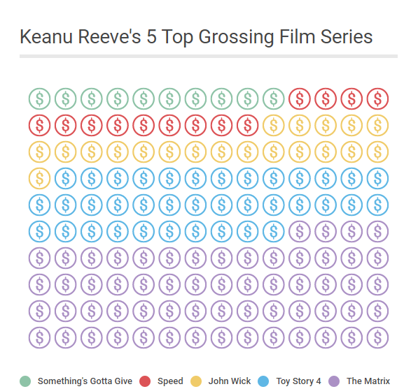

It turns out, Keanu Reeves really doesn't like to shoot movies outside of populated areas (Or maybe just the movie industry as a whole). Lots of his films were filmed in either LA (film capital of the US!) or NY, unsurprisingly. You would think that more exotic films would have more exotic locations, but I guess they all manage to find an exotic-looking place close to home.

Unfortunately for the actor, since The Matrix, his biggest hit by far has been Toy Story 4, where he plays Duke Caboom, a far less than main character.